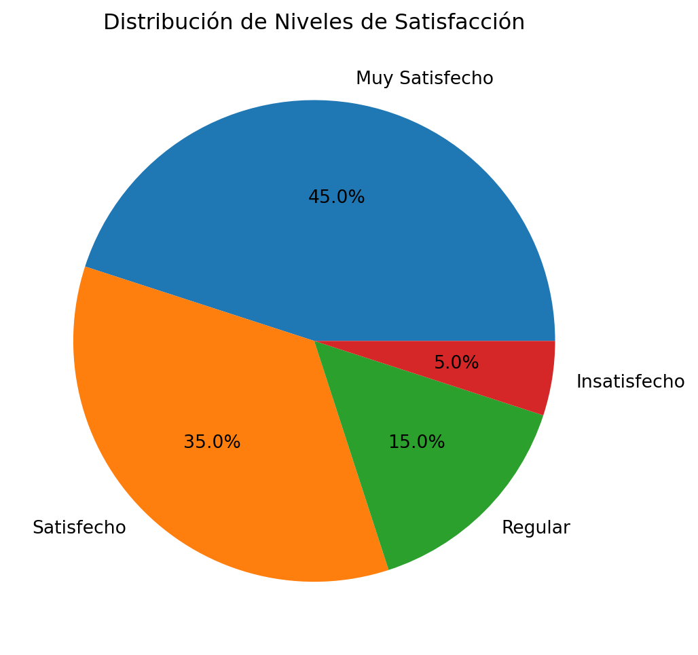

Un cuestionario es un instrumento de recolección de datos que consiste en un conjunto de preguntas estructuradas y estandarizadas, diseñadas para obtener información específica de los encuestados sobre hechos, opiniones, actitudes, conocimientos o comportamientos relacionados con el objeto de estudio.
El cuestionario constituye la columna vertebral de una encuesta, ya que permite obtener información de manera sistemática y uniforme de todos los participantes, facilitando posteriormente el análisis estadístico y la interpretación de los resultados.
Funciones del Cuestionario
Los cuestionarios cumplen tres funciones básicas en el proceso de investigación:
1. Función de Traducción
Convertir las necesidades de información de la investigación en preguntas adecuadamente formuladas
Permitir obtener respuestas válidas y confiables
Suministrar los datos requeridos para cumplir los objetivos de la encuesta
2. Función de Motivación
Guiar la entrevista y ayudar al entrevistador a motivar al sujeto
Facilitar la participación con interés y seriedad
Comunicar la información requerida con sinceridad y exactitud
Crear un ambiente de confianza y tranquilidad
3. Función de Procesamiento
Facilitar el correcto registro de respuestas mediante diseño apropiado
Permitir las etapas siguientes de codificación y procesamiento de datos
Centralizar toda la información en un mismo documento para digitación estandarizada
Preguntas de Investigación vs Preguntas del Cuestionario
Es fundamental distinguir entre:
Preguntas de investigación: Preocupaciones básicas e interrogantes abstractas que debe aclarar el estudio
Preguntas del cuestionario: Formulaciones concretas, directamente medibles, que pueden ser entendidas y respondidas por los entrevistados
Las preguntas de investigación deben traducirse a términos concretos y comprensibles, ya que los entrevistados no pueden percibir conceptos abstractos directamente.
Code
# Ejemplo de análisis de respuestas de cuestionarioimport pandas as pdimport matplotlib.pyplot as plt# Datos de ejemplo de una encuesta de satisfacciónsatisfaccion = {'Muy Satisfecho': 45,'Satisfecho': 35,'Regular': 15,'Insatisfecho': 5}# Crear gráficoplt.figure(figsize=(10, 6))plt.pie(satisfaccion.values(), labels=satisfaccion.keys(), autopct='%1.1f%%')plt.title('Distribución de Niveles de Satisfacción')plt.show()

Tipos de Preguntas: Abiertas y Cerradas
Preguntas Cerradas
Las preguntas cerradas son aquellas cuyas opciones de respuesta están limitadas o fijadas de antemano. Se clasifican en:
Dicotómicas
Solo dos opciones de respuesta
Ejemplo: “¿Posee usted automóvil? 1. Sí 2. No”
De Opción Múltiple
Varias opciones pero solo una es aceptable
Ejemplo: “¿Cuál es su estado civil?
Soltero 2. Casado 3. Divorciado 4. Viudo”
De Respuesta Múltiple
Se pueden seleccionar varias opciones
Ejemplo: “¿En qué lugares ha usado internet? (Puede marcar varios)
Casa - Trabajo - Café internet - Universidad”
Preguntas Abiertas
Las preguntas abiertas permiten una respuesta libre, no limitada a alternativas preestablecidas:
Típicas (Respuesta libre sin clasificación)
Ejemplo: “¿Para usted qué significa tener éxito en la vida?”
De Registro Cerrado (Respuesta libre clasificada)
Ejemplo: “¿Cuál es la razón principal por la que prefiere la marca de arroz Liberia?”
Código 01: Sabor
Código 02: Precio
Código 03: Calidad
Ventajas y Desventajas
Preguntas Cerradas
Ventajas: - Formulación rápida y fácil registro - Respuestas clasificadas (codificadas) en el momento de la entrevista - Procesamiento y análisis relativamente sencillos - Facilitan las comparaciones estadísticas
Desventajas: - Pueden forzar al entrevistado a emitir juicios sobre temas poco conocidos - El entrevistado puede sentirse obligado a seleccionar una opción aunque no represente exactamente su opinión - Riesgo de respuestas imprecisas si las opciones no cubren todas las posibilidades
Preguntas Abiertas
Ventajas: - Permiten al entrevistado contestar espontáneamente y en sus propios términos - Facilitan explicar el marco de referencia siguiendo su lógica - No imponen limitaciones en las respuestas
Desventajas: - Procesamiento de datos más complejo - Requieren desarrollo de esquema de codificación - Generan gran variedad de respuestas - Clasificación laboriosa y consume mucho tiempo - Mayor dificultad para análisis estadístico
Aspectos de Construcción del Cuestionario
Orden de las Preguntas
El orden debe seguir una estructura de embudo:
Preguntas generales al inicio para ganar confianza
Progresión gradual hacia preguntas más específicas
Preguntas sensibles en partes central y final del cuestionario
Preguntas de calentamiento de naturaleza general antes de temas delicados
Principio fundamental: Evitar que unas preguntas contaminen las respuestas de otras posteriores.
Preguntas Filtro
Las preguntas filtro identifican a los únicos sujetos a los que son aplicables ciertos bloques de preguntas.
Ejemplo:
P10. ¿Y ha visto el anuncio de Otto Guevara donde sale una persona en la calle?
1. Sí 2. NO 3. Lo vio pero no le puso atención
P10A. ¿Y el anuncio le gustó o no le gustó?
1. Le gustó mucho 2. Le gustó en parte 3. No le gustó
Duración del Cuestionario
Consideraciones importantes: - El número de preguntas debe mantenerse dentro de límites razonables - Riesgo de cansar al consultado y perder cooperación - Efecto negativo sobre la calidad de las respuestas - Balance entre cantidad de información y calidad de respuestas
Recomendación: No existen reglas estandarizadas; depende de la naturaleza del estudio y requiere experiencia sistemática.
Problemas en la Redacción de Preguntas
Problemas de Lenguaje
Errores comunes: - Uso de términos imprecisos y períodos indefinidos - Lenguaje técnico no familiar al grupo estudiado - Uso de lenguaje popular que inhibe al entrevistado - Falta de claridad en la especificación de lo que se desea investigar
Principio: Las preguntas deben ser simples y evitar cualquier tipo de ambigüedad
Preguntas Bidimensionales
Error: Incluir dos preguntas en una sola formulación
Ejemplo problemático: “¿Este tipo de candado es un buen producto y se venderá bien en Costa Rica?”
Solución: Separar en dos preguntas independientes: - “¿En su opinión, este tipo de candado es un buen producto?” - “¿En su opinión se venderá bien en Costa Rica?”
Doble Negación
Problema: Combinación del negativo en la pregunta con “No” o “desacuerdo” en la respuesta produce confusión.
Ejemplo problemático: “Saber navegar en internet no es tan importante como algunos creen. ¿Está usted de acuerdo o en desacuerdo con esta afirmación?”
Corrección: “¿En su opinión saber navegar en internet es tan importante como algunos creen o no es tan importante?”
Importancia de las Pruebas Piloto
Propósitos Fundamentales
Las pruebas piloto son esenciales para:
Identificar y eliminar problemas derivados de mala redacción
Detectar ordenamiento inadecuado de los temas
Identificar ítems innecesarios o palabras que provoquen sesgos
Obtener información para decidir la adición de nuevas interrogantes
Conocer la duración del cuestionario y determinar si debe ajustarse
Proceso de Revisión
La prueba puede cubrir: - Solo una parte del cuestionario para aspectos específicos - La totalidad del cuestionario en condiciones similares al estudio final
Objetivo básico: Observar el funcionamiento de preguntas y cuestionario, NO obtener información sustantiva ni adelantar resultados.
Recomendaciones
Seleccionar una muestra representativa de diferentes situaciones de entrevista
Incluir diversos tipos de entrevistados según variables relevantes
Probar en condiciones similares a la investigación final
Realizar ajustes necesarios antes de la aplicación definitiva
Code
# Ejemplo de análisis de datos de prueba pilotoimport numpy as np# Simulación de tiempos de respuesta en prueba pilototiempos_respuesta = np.random.normal(15, 3, 50) # 15 min promedio, desv std 3print(f"Tiempo promedio: {np.mean(tiempos_respuesta):.1f} minutos")print(f"Tiempo mínimo: {np.min(tiempos_respuesta):.1f} minutos") print(f"Tiempo máximo: {np.max(tiempos_respuesta):.1f} minutos")print(f"Desviación estándar: {np.std(tiempos_respuesta):.1f} minutos")
Tiempo promedio: 15.0 minutos
Tiempo mínimo: 8.2 minutos
Tiempo máximo: 23.4 minutos
Desviación estándar: 2.8 minutos
Conclusión
El diseño de un cuestionario efectivo requiere:
Claridad conceptual sobre los objetivos de investigación
Distinción precisa entre interrogantes de investigación y preguntas del cuestionario
Selección adecuada del tipo de preguntas según la información requerida
Atención cuidadosa al orden, redacción y estructura general
Validación mediante pruebas piloto antes de la aplicación final
Un cuestionario bien construido es la base para obtener información pertinente, válida y confiable que permita cumplir con los objetivos del estudio de investigación.